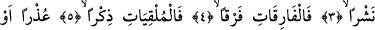
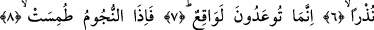
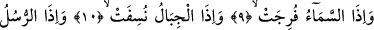
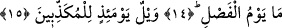

O GÜN
YALAN SAYANLARIN
VAY HALİNE!
Bismillâhirrahmânirrahîm
1. Yemin olsun, (iyiliklerle) birbiri peşinden gönderilenlere;
2. Şiddetle eserek (zararlıları) savurup atanlara;
3. (Hakîkat ve hayırları) yaydıkça yayanlara;
4. (Hak ile bâtılı) birbirinden iyice ayıranlara;
5. (Allah’a yönelenleri) arıtmak,
6. (Kötüleri) sakındırmak için öğüt telkin edenlere;
7. Bilin ki size vaad olunan şey gerçekleşecektir.
8. Yıldızların ışığı söndürüldüğü,
9. Gökkubbe yarıldığı,
10. Dağlar ufalanıp savrulduğu ve
11. Peygamberlerin (ümmetleri hakkında şâhidlik) vakti tâyin edildiği zaman
(artık kıyâmet kopmuştur).
12. (Bu alâmetler) hangi vakte ertelenmiştir?
13. Ayırım gününe.
14. (Rasûlüm!) Ayırım gününün ne olduğunu sen nereden bileceksin!
15. O gün (Peygamber’i ve âhireti) yalan sayanların vay hâline!
“Andolsun birbiri peşinden gönderilenlere”, Hak üzere oldukları, hakka uydukları
için hak ehline dünyada ve âhirette bâtıla sapanlara da hakka uymadıklarından uyarı için
vahiy indirenlere.